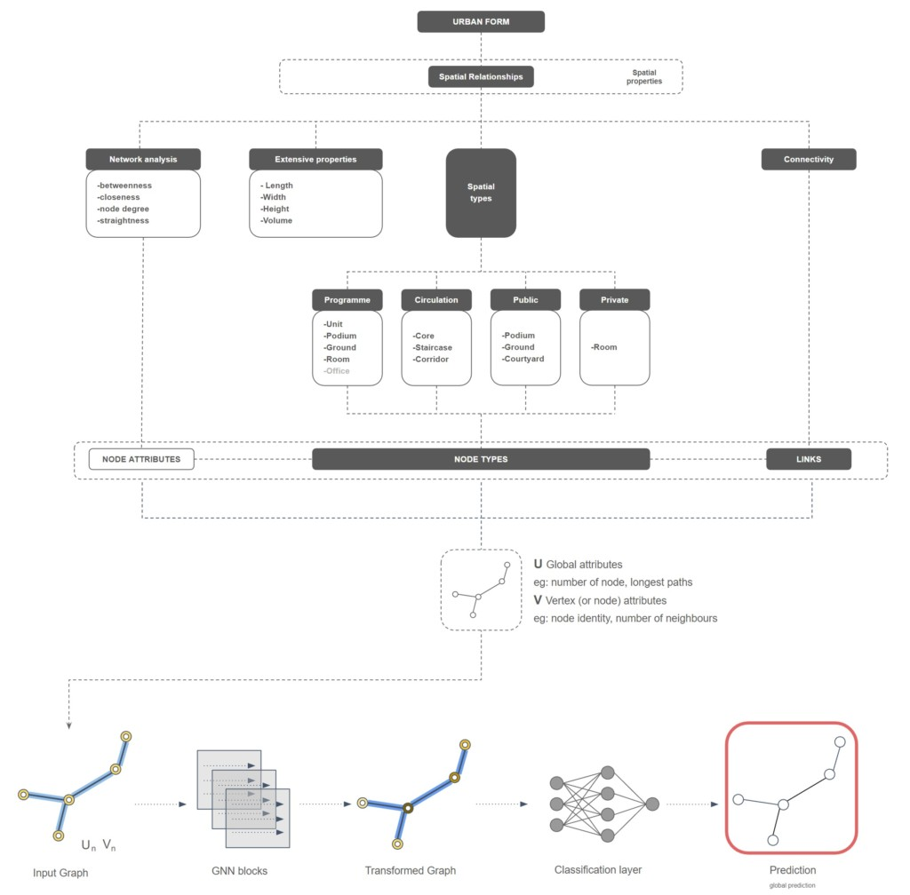
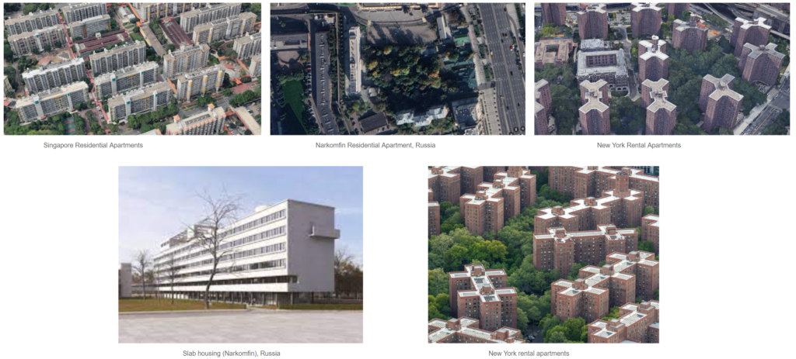
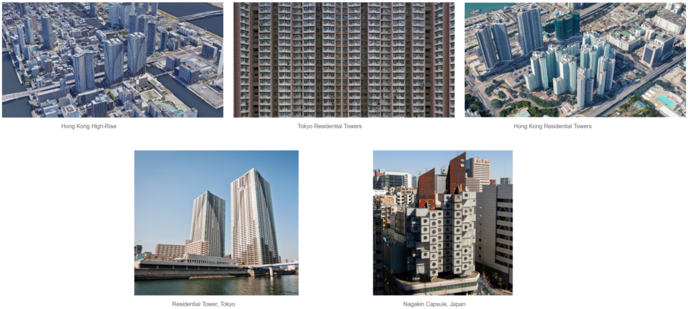
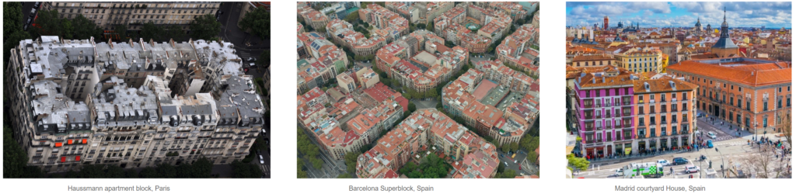
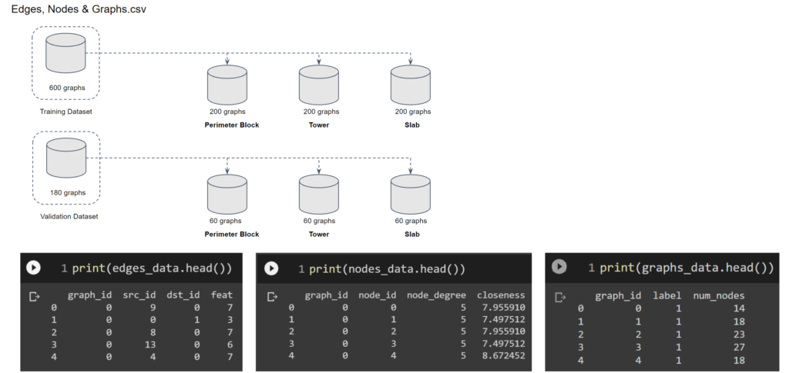
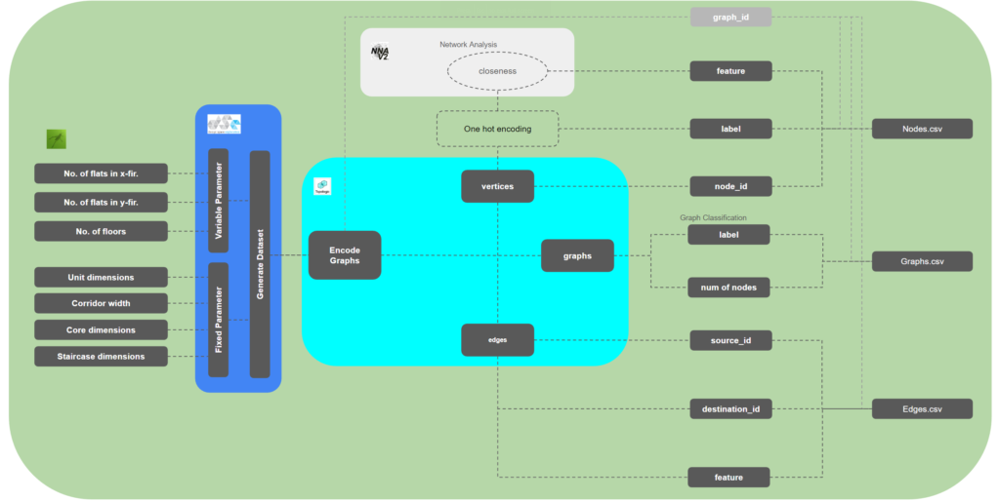
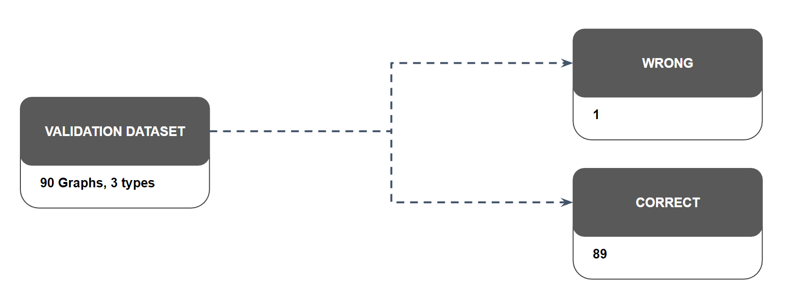
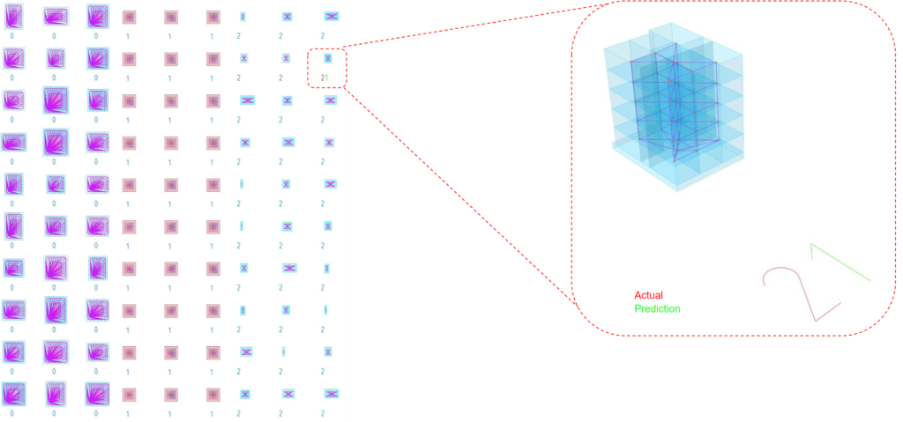

Configurable Topologies
Configurable Topologies investigates a recommendation and classification system for three-dimensional building prototypes based on their topological relationships.
The thesis combines parametric modelling, architectural typologies, graph representation, graph features and supervised graph machine learning. Controlled synthetic datasets make the topological rules explicit before the work considers future application to real architectural and BIM data.
Controlled synthetic architectural data
Synthetic architectural datasets were generated parametrically in Grasshopper. The dataset is controlled through architectural relationships and should not be described simply as AI-generated buildings.
Supervised graph classification
Supervised graph learning using Graph Convolutional Networks was used to classify the building graphs. Training and validation graphs, network configuration, accuracy and loss are retained as distinct parts of the evaluation.








Credits
- Author
- Naitik Sharma
- Guide
- Oana Taut
- Technical credit
- Prof. Wassim Jabi
- Media
- Official project documentation — IAAC